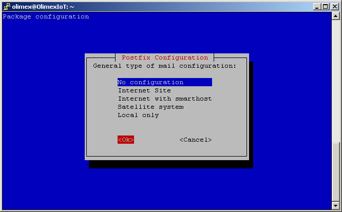

Back to How to install OlimexIoT server
Following instructions are tested on Ubuntu 14.04 LTS and 16.04 LTS.
Install packages needed for cross compiling u-boot and kernel and partition table manipulation
sudo apt-get install gcc-arm-linux-gnueabihf sudo apt-get install git sudo apt-get install device-tree-compiler sudo apt-get install libncurses5-dev sudo apt-get install u-boot-tools sudo apt-get install qemu-user-static debootstrap binfmt-support sudo apt-get install parted e2fsprogs eject
Create folder for the project
mkdir ~/OlimexIoT
Get the sources
cd ~/OlimexIoT git clone git://git.denx.de/u-boot.git
List tags and get the latest (in our case v2016.09)
cd ~/OlimexIoT/u-boot git tag -l git checkout tags/v2016.09 -b v2016.09
Build
make ARCH=arm CROSS_COMPILE=arm-linux-gnueabihf- -j4 A20-OLinuXino_MICRO_defconfig make ARCH=arm CROSS_COMPILE=arm-linux-gnueabihf- -j4
If build is OK the last line shoult be CAT u-boot-sunxi-with-spl.bin
Create source for SD-card
cat <<__EOF__ > boot.cmd setenv bootargs console=ttyS0,115200 root=/dev/mmcblk0p2 rootfstype=ext4 rw rootwait panic=10 loglevel=0 load mmc 0:1 0x43000000 sun7i-a20-olinuxino-micro.dtb load mmc 0:1 0x42000000 zImage bootz 0x42000000 - 0x43000000 __EOF__
Build sctipt for SD-card
mkimage -C none -A arm -T script -d boot.cmd boot.scr
Create source for HDD
cat <<__EOF__ > boot-hdd.cmd setenv bootargs console=ttyS0,115200 root=/dev/sda1 rootfstype=ext4 rw rootwait panic=10 loglevel=0 load mmc 0:1 0x43000000 sun7i-a20-olinuxino-micro.dtb load mmc 0:1 0x42000000 zImage bootz 0x42000000 - 0x43000000 __EOF__
Build sctipt for HDD
mkimage -C none -A arm -T script -d boot-hdd.cmd boot-hdd.scr
Get the sources
cd ~/OlimexIoT git clone git://git.kernel.org/pub/scm/linux/kernel/git/torvalds/linux.git --depth=1 cd ~/OlimexIoT/linux
Get our .config
wget https://iot.olimex.com/install/OlimexIoT_defconfig -O .config
If you want - do some changes
make ARCH=arm CROSS_COMPILE=arm-linux-gnueabihf- menuconfig
Build
make ARCH=arm CROSS_COMPILE=arm-linux-gnueabihf- -j4 zImage modules dtbs
Create folder
cd ~/OlimexIoT mkdir rootfs
Make rootfs
sudo debootstrap --arch=armhf --foreign jessie rootfs
Copy qemu and set resolv.conf
sudo cp /usr/bin/qemu-arm-static rootfs/usr/bin/ echo "nameserver 8.8.8.8" | sudo tee rootfs/etc/resolv.conf
Get into the new file system
sudo chroot rootfs
Inside the new file system
export LANG=C /debootstrap/debootstrap --second-stage
Set root password
passwd
In pre-build image we set password to olimex
Set hostname
echo "OlimexIoT" > /etc/hostname echo "127.0.0.1 OlimexIoT" >> /etc/hosts
Automate boot partition mounting
cat <<__EOF__ > /etc/fstab # <file system> <dir> <type> <options> <dump> <pass> /dev/mmcblk0p1 /boot ext4 defaults 0 0 __EOF__
Update apt sources list
cat <<__EOF__ > /etc/apt/sources.list #------------------------------------------------------------------------------# # OFFICIAL DEBIAN REPOS #------------------------------------------------------------------------------# ###### Debian Main Repos deb http://ftp.bg.debian.org/debian jessie main contrib non-free deb-src http://ftp.bg.debian.org/debian jessie main contrib non-free ###### Debian Update Repos deb http://security.debian.org/debian-security jessie/updates main contrib non-free deb-src http://security.debian.org/debian-security jessie/updates main contrib non-free __EOF__
Resynchronize the package index files from their sources.
apt-get update
Set system locales
apt-get install locales dialog pv dpkg-reconfigure locales
Select en_US.UTF-8 UTF-8 and set it as default locale
Install wireless tools
apt-get install firmware-ralink wpasupplicant ethtool wireless-tools
Install parted
apt-get install parted
Install NTP
apt-get install ntp
Install Postfix MTA
apt-get install postfix
Postfix should be configured by the user at first run. So here we do not touch anything.
Install ssh and sudo
apt-get install ssh sudo
Add olimex user
adduser olimex usermod -a -G sudo olimex
In pre-build image we set password to olimex and left all other to blank.
Automate loading of USB Ethernet kernel module
echo "g_ether" >> /etc/modules
Configure ethernet and wireless network
echo "iface eth0 inet dhcp" > /etc/network/interfaces.d/eth0 echo "iface wlan0 inet dhcp" > /etc/network/interfaces.d/wlan0
Configure USB Ethernet network
cat <<__EOF__ > /etc/network/interfaces.d/usb0 auto usb0 iface usb0 inet static address 192.168.2.1 netmask 255.255.255.0 __EOF__
Install DHCP server
apt-get install isc-dhcp-server
Configure DHCP server for USB Ethernet network
cat <<__EOF__ > /etc/dhcp/dhcpd.conf
ddns-update-style none;
default-lease-time 28800;
max-lease-time 43200;
option subnet-mask 255.255.255.0;
subnet 192.168.2.0 netmask 255.255.255.0 {
range 192.168.2.2 192.168.2.250;
}
__EOF__
(optional) Fix /etc/vim/vimrc.tiny
sed -i "s/set compatible/set nocompatible\nset term=xterm/g" /etc/vim/vimrc.tiny
(optional) Intall bash-completion
apt-get install bash-completion
(optional) Enable bash aliases
sed -i "s/# alias/alias/g" /root/.bashrc
(optional) Set my favorite bash settings
cat <<__EOF__ >> /etc/inputrc # single tab auto-complete set show-all-if-ambiguous on # alternate mappings for "up" and "down" to search the history "\e[A": history-search-backward "\e[B": history-search-forward __EOF__
Install local package dependency resolver
apt-get install gdebi-core
Get olimex-iot_1.0.2-1_all.deb package
wget https://iot.olimex.com/install/olimex-iot_1.0.2-1_all.deb -P /var/cache/
Install olimex-iot
gdebi /var/cache/olimex-iot_1.0.2-1_all.deb
- Configuring olimex-iot -
Set database password: olimex
Server name: OlimexIoT
Default server: Yes
NodeJS port: 8080
Service name: Olimex IoT Service
email from: iot@yourdomain.com
New nodes: auto
Configure database for olimex-iot with dbconfig-common? yes
Exit from chroot
exit
Install kernel modules
cd ~/OlimexIoT/linux sudo make ARCH=arm CROSS_COMPILE=arm-linux-gnueabihf- -j4 INSTALL_MOD_PATH=~/OlimexIoT/rootfs modules_install
Pack rootfs to move it on HDD
cd ~/OlimexIoT/rootfs sudo tar czf rootfs.tgz --numeric-owner * sudo wget https://iot.olimex.com/install/rootfs2hdd -O root/rootfs2hdd sudo chmod 744 root/rootfs2hdd cd ~/OlimexIoT
As an alternative of making SD-card you can prepare image as file
NOTE You MUST replace /dev/sdX with your card reader device, e.g. /dev/sdb OR /dev/sdc
Plug your SD-card into your computer
To determine your card reader device use following command
lsblk -d -o NAME,SIZE,TRAN,LABEL
Unmount partitions if there are any automounted
sudo umount /dev/sdX*
Delete old partitions
sudo parted -s /dev/sdX mktable msdos
Create boot partition
sudo parted -s -a optimal /dev/sdX mkpart primary ext4 1 16MiB
Create rootfs partition
sudo parted -s -a optimal /dev/sdX mkpart primary ext4 16MiB 100%
First check version of e2fsprogs package
dpkg -s e2fsprogs|grep Version
If your e2fsprogs package is version 1.43 or greater
sudo mkfs.ext4 -F -O ^metadata_csum,^64bit /dev/sdX1 sudo mkfs.ext4 -F -O ^metadata_csum,^64bit /dev/sdX2
OR
If your e2fsprogs package is version 1.42 or less
sudo mkfs.ext4 -F /dev/sdX1 sudo mkfs.ext4 -F /dev/sdX2
Burn u-boot
sudo dd if=~/OlimexIoT/u-boot/u-boot-sunxi-with-spl.bin of=/dev/sdX bs=1k seek=8
Mount SD-card partitions
sudo mkdir -p /mnt/boot sudo mkdir -p /mnt/sd sudo mount /dev/sdX1 /mnt/boot sudo mount /dev/sdX2 /mnt/sd
Install kernel
sudo cp ~/OlimexIoT/u-boot/boot*.scr /mnt/boot sudo cp ~/OlimexIoT/linux/arch/arm/boot/zImage /mnt/boot sudo cp ~/OlimexIoT/linux/arch/arm/boot/dts/sun7i-a20-olinuxino-micro.dtb /mnt/boot
Install rootfs
sudo cp -rvfp ~/OlimexIoT/rootfs/* /mnt/sd
Unmount SD-card
sync
sudo eject /dev/sdX
Continue with Starting the board for the first time
Back to How to install OlimexIoT server